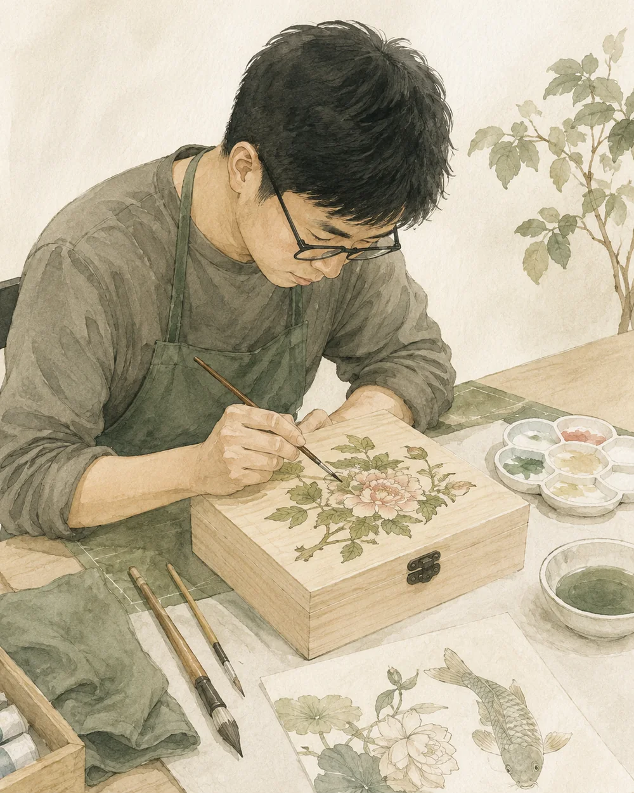

그림을 소장하다
아트프린트 · 엽서
그림을 배우고,
작품을 일상으로.
미담 서정희 작가와 함께하는 민화.
창작과 전시, 배움과 선물이 만나는 공간.

미담 서정희 작가는 태장 장애인 근로자들의 민화 교육과 작품 활동을 지도하고 있습니다. 한 점의 완성까지 이어지는 창작 경험을 함께 나눕니다.
작가의 작품 세계
배우고 익히는 시간
소품과 선물로의 확장
작가의 시선으로 만나는 민화
감상하는 그림에서 곁에 두는 물건으로.
민화의 색과 이야기를 선물에 담는 방법을 준비합니다.

아트프린트 · 엽서
생활 소품 · 마그넷
보석함 · 선물 구성

선을 익히고 색을 더하며 저마다의 속도로 작품을 완성합니다. 태장은 이 시간을 창작 경험과 일로 이어가고 있습니다.
작가와 함께 선과 채색을 익힙니다.
자신의 속도로 한 점을 만들어갑니다.
채색·다듬기·검수·포장으로 역할을 넓힙니다.
정기적인 직원 교육에서 출발해
처음 배우는 사람과 기관을 위한 수업을 준비합니다.
 현재 활동
현재 활동배움과 반복으로 이어지는
태장의 정기 창작 시간.

준비 중콘셉트 일러스트처음 잡는 붓부터
나의 첫 작품까지.
학교·기업·기관의 목적에 맞춘
민화 교육과 체험을 협의합니다.
외부 클래스의 일정·정원·참가비는 협의 후 안내합니다.
클래스·출강 문의작가 협업부터 클래스·출강,
굿즈와 맞춤 제작까지 이야기해 주세요.